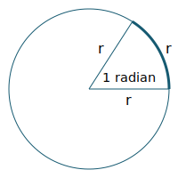
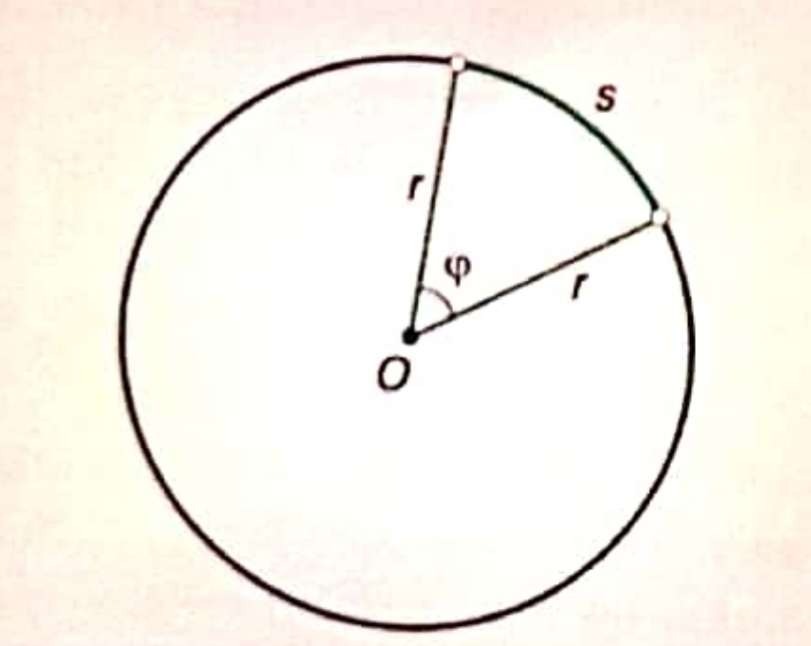
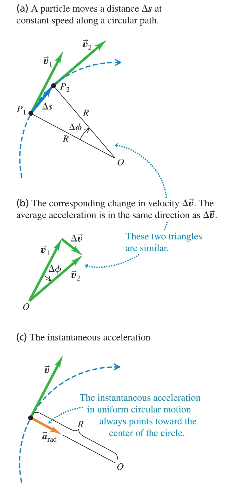

-
Радиан - естествена и безразмерна мярка за ъгъл
а) определение - един радиан е ъгълът, който отговаря на дъга с дължина радиуса на окръжността

б) измерване на централен ъгъл в радиани - ъгълът $\varphi$ в радиани е равен на съотношението между дължината на отговарящата му дъга $s$ и радиуса $r$
$$\varphi = \frac{s}{r}$$

в) зависимост между радиани и градуси - на цялата окръжност от 360° градуса съответстват $2\pi$ радиана
$$2\pi \text{ rad} = 360\degree$$
-
Движение по окръжност с постоянна скорост - големината на скоростта е константа
а) скорост - винаги перпендикулярна на окръжността
б) центростремително ускорение - ускорението винаги е насочено перпендикулярно на вектора на скоростта и сочи навътре към центъра на окръжността
$$a = \frac{v^2}{R}$$

Доказателство:
От $OP_1 \perp R$ и $OP_2 \perp R$ следва, че $\angle P_1OP_2 = \angle(\vec{v}_1, O, \vec{v}_2) = \Delta \phi$ (след преместване на векторите на скоростта в точката $O$). Следователно
$$\triangle P_1OP_2 \sim \triangle(\vec{v_1}, O, \vec{v_2}) \implies \frac{v}{R} = \frac{|\Delta \vec{v}|}{\Delta s}$$
$$|\Delta \vec{v}| = \frac{v}{R}\Delta s \implies \frac{|\Delta \vec{v}|}{\Delta t} = \frac{v}{R}\frac{\Delta s}{\Delta t}$$
От лимита на това уравнение се получава, че
$$\frac{dv}{dt} = \frac{v}{R}\frac{ds}{dt} = \frac{v^2}{R}$$
$$